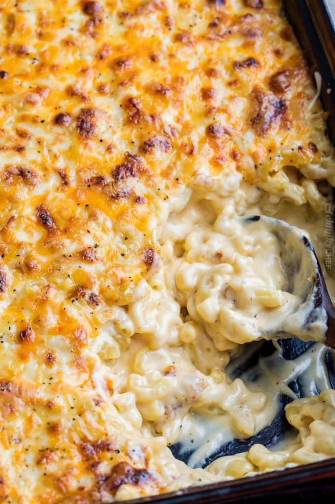

Mac and Cheese

Ingredients
- 8 ounces uncooked elbow macaroni
- 2 cups shredded sharp Cheddar cheese
- 1/2 cup grated Parmesan cheese
- 3 cups of milk
- 1/4 cup of butter
- 2 1/2 tablespoons all-purpose flour
- 2 tablespoons of butter
- 1/2 cup bread crumbs
- 1 pinch paprika
Steps